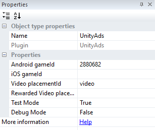
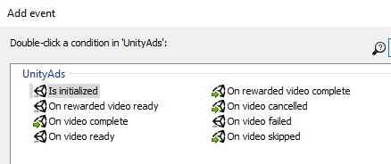
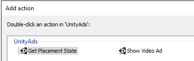
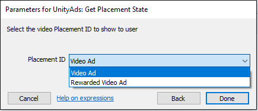
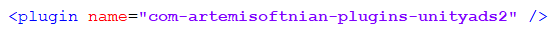

Usando Unity ADS no Construct 2 com Cordova CLI

Primeiro vamos conhecer o que é Unity,
Unity é uma game engine, uma das mais utilizadas no mundo por estúdios indies.
Agora vamos conhecer o Unity ADS, veja a descrição oficial retirada do site da empresa.
Unity Ads
Seja remunerado pelo seu trabalho
Unity Ads permite aos editores integrar anúncios em vídeo em seus jogos móveis que melhoram o envolvimento do usuário e geram ganhos durante a vida útil do jogo.
Unity Ads oferece o rendimento médio por usuário (ARPU) mais alto de todas as redes globais de anúncios publicitários em vídeo recompensados.
E os anunciantes podem aproveitar a grande oportunidade para conectar com o público certo.
O mais incrível é que podemos utilizar no Construct 2 e de graça.
Vamos direto ao assunto.
Vamos direto ao assunto.
Unity ADS Dashboard
Primeiro precisamos ter uma conta no serviço, Unity ADS, podendo utilizar a sua
conta Google ou do Facebook se preferir.

Foto-01
Com a conta já criada, você terá que criar o projeto.

Foto-02
É necessário já ter o aplicativo na loja da Google ou da Apple, pois será necessário colocar a ID do aplicativo/jogo,
quando criar o projeto no serviço.
Para fins didáticos, irei utilizar um projeto meu para mostrar o que é necessário para coletar a ID do Unity ADS.
Considere a URL do aplicativo.
https://play.google.com/store/apps/details?id=com.flashlightpixel.chronosgames
O que nos interessa é apenas a ID na Google Play que é literalmente o final do link com.flashlightpixel.chronosgames, sendo assim vamos pegar a ID e adicionar
no serviço, conforme imagem abaixo.

Foto-03
Adicionado a ID do Lanterna Pixel no serviço Unity ADS, será mostrado informações do aplicativo.
Com o projeto criado, vamos coletar apenas a ID da plataforma, no nosso caso a Game ID do Android.
Como não pretendo detalhar cada uma das informações do serviço, voi ir direto ao ponto, que é necessária para o Construct 2.
No painel do lado esquerdo, existem diversas opções, clicando em Monetization depois em Platforms, será exibido a imagem abaixo.
Nós vamos pegar a Game ID Android, pois só adicionamos esta plataforma no projeto no Construct 2.

Foto-04
Agora precisamos do plugin Unity ADS para Construct 2, faça Download no site oficial da engine
Plugin Unity ADS para Construct 2, o processo de instalação
é bem simples, com o C2 aberto, simplesmente arraste o arquivo unityads-2.2.0-stable.c2addon e solte sobre o C2. Feche e abra
novamente o C2 e pronto, o Plugin já está adicionado na engine, porém não está no projeto, você precisa adicionar.

Foto-05
Modificações no Construct 2
Agora vamos adicionar a Game ID Android do Unity ADS no plugin no Contruct 2. Repare que em Android gameId eu utilizei a
ID 2880682 que foi coletada na Dashboard do Unity ADS.
Também não vou detalhar todas as opções, apenas as mais importantes para que funcione o plugin.
Repare que em Video placementId eu coloquei a string video, esta string é necessário pois é padrão do plugin
para rodar um ADS de vídeo, porém pode ser modificada como quiser na plataforma e posteriormente no plugin, não vamos abordar isso neste tutorial.

Foto-06
Existem diversos eventos de checagem do plugin, porém de ações temos basicamente 2, carregar o ADS e mostrar. Podendo por exemplo verificar se o vídeo rodou completamente, se foi pulado, se foi cancelado, excelente e necessário para entregar prêmios para os jogadores.

Foto-07
Para ir direto ao ponto, vou utilizar apenas o método para jogos com "partidas rápidas", eu costumo colocar em Get Placement State o
utilizar o Video Ad já no On Start Layout no Construct 2.

Foto-08
Este método é eficaz pois carrega o ADS, deixando pronto para quando for chamado em Show Video Ad neste caso como utilizei
a tag video, preciso escolher também Video Ad no Construct 2 dentro da lógica do seu evento onde quer mostrar o ADS.
Um detalhe muito importante quando se trata de ADS, é sempre carregar o ADS antes do momento que for mostrar para o jogador.

Foto-09
Processo no Cordova CLI
Com a configuração do serviço Unity ADS e do Construct 2 concluídas, agora vamos para o Cordova CLI.
Vamos exportar o projeto Cordova.
Repare que no config.xml temos a linha referente ao plugin do Unity ADS que foi adicionado automaticamente pelo próprio plugin.

Foto-10
Caso não conheça sobre exportação e geração de aplicativos Cordova CLI, eu fiz uma série de tutoriais abordando detalhadamente cada aspecto.
O primeiro é Construct 2 - Trabalhando com Cordova CLI onde abordamos a preparação do
ambiente "instalando e configurando os programas necessários", depois Gerando APK pelo Corodova CLI, onde
abordamos detalhes do da exportação, arquivos gerados e comandos necessários para gerar o APK, finalizando com assinatura do APK, já deixando preparado
para subir para a Google Play.
É necessário entender o processo para entender o restante deste tutorial.
Vou dividir o restante em 2 partes, o primeiro com um novo projeto, o segundo com um projeto existente, ambas muito simples de implementar.
Novo projeto
O processo é bem simples, pois o próprio plugin já adiciona no config.xlm para quando adicionarmos a plataforma Android o plugin será
baixado e instalado no projeto, usando o comando.
cordova platform add android
Gere o APK e teste
Projeto existente
O processo também é bem simples, você precisa apenas adicionar o plugin no projeto, usando o comando abaixo.
cordova plugin add com-artemisoftnian-plugins-unityads2
Gere o APK e teste

Foto-11
Como podem ver, o Unity ADS está rodando corretamente no projeto do Construct 2
Observações finais
O Unity Ads envia a propaganda pronta, mesmo se no plugin do Construct 2 estiver configurado para modo Test, caso queira testar em modo Debug, precisa alterar
dentro da Dashboard da plataforma. É bem simples, existem diversas configurações de filtros, como categoria do jogo, classificação de conteúdo, além da
configuração do próprio ADS, como orientação do vídeo Vertial ou Horizontal, sobreposição do modo test e ativar ou desativar o ADS, tudo isso sem alterar
sequer uma linha do seu projeto, pois tudo é configurado de dentro da sua Unity ADS Dashboard.
Para chegar nestas configurações, chegue na plataforma, conforme a Foto-04, depois clique no seu aplicativo da Google Play, configure
conforme desejar.
Um dos motivos de amar o Cordova CLI é a velocidade e praticidade de utilizar a tecnologia, claro que necessidata de conhecimentos prévios, porém
não é nada complicado se a pessoa for curiosa e esforçada.
Caso tenha alguma dúvida pode nos mandar email ou perguntar onde o tutorial for postado.